REVUE MÉTHODE
http://revuemethode.org
Merci pour votre message !
par Olivier MENUT
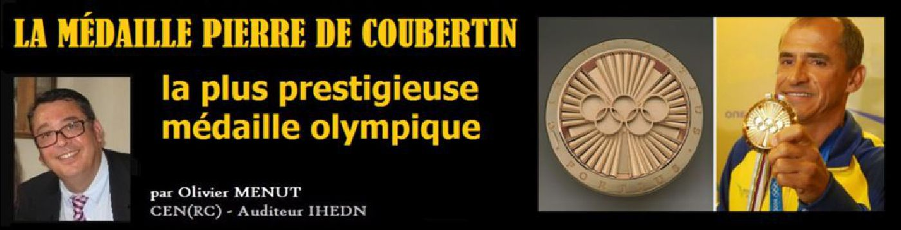
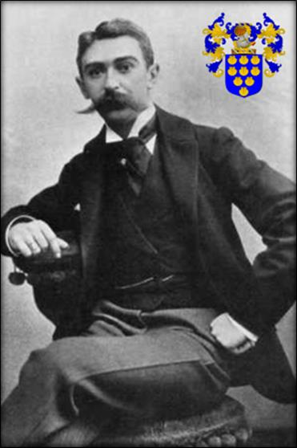
En 1892, arbitrant, la finale du premier championnat de France de Rugby, il dessine et offre le trophée de l'épreuve, le fameux bouclier de « Brennus » du nom du président du Sporting Club Universitaire de France, Charles Brennus. En 1894, Pierre de Coubertin va finalement fonder la grande œuvre de sa vie : le Comité International Olympique, dont il sera le président de 1896 à 1925. Il sera également le fondateur en 1912 des scouts laïcs, dit
« Eclaireurs Français » et s’installera en Suisse à Lausanne à partir de 1915, où il mourra, ruiné, d’une crise cardiaque à Genève, âgé de 74 ans après une vie sommes toute bien remplie mais qui lui couta sa fortune.
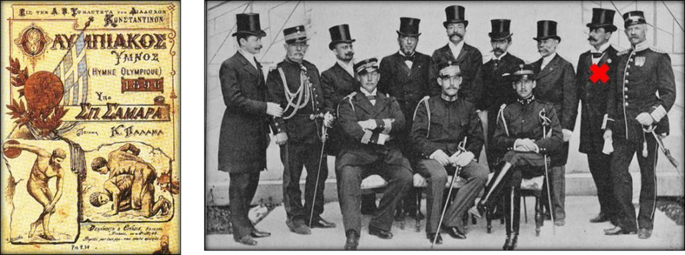
Pour l’anecdote, on notera que le baron de Coubertin fut distingué des plus grands ordres européens, mais jamais d’une seule distinction française, sa vision du sport entrant en opposition directe avec la vision officielle et plus républicaine d’une « éducation physique militaire », telle que prônée en France depuis la fin du XIX° siècle ! Il fut toutefois récompensé des ordres suivants qui sont conservés au musée international Olympique de Lausanne :
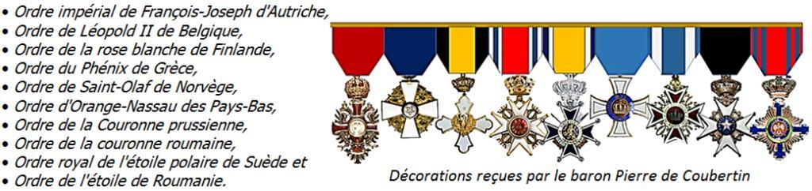
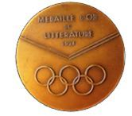
Médaille d’Or
Enfin, avant d’en terminer sur la rapide présentation de ce singulier personnage – sur lequel il y aurait tant à dire tant sa personnalité était riche et ambiguë – nous rajouterons, qu’il n’aurait jamais prononcé la fameuse phrase : « L’important est de participer », devise somme toute, fort peut athlétique, mais aurait repris lors d’un cocktail à Londres en 1908, les mots de l’Évêque de Pennsylvanie : « L’important aux Jeux olympiques n’est pas d’y gagner, mais d’y prendre part, car l’essentiel dans la vie n’est pas tant de conquérir que de bien lutter ». Quoi qu’il en soit, les Jeux Olympiques que le Baron réinventa, tentèrent – à l’origine – d’installer un certain idéal humaniste autour du sport, même si nous ne devons pas être naïfs et reconnaitre que de nos jours des contingences beaucoup moins nobles habitent certains sportifs et nations…
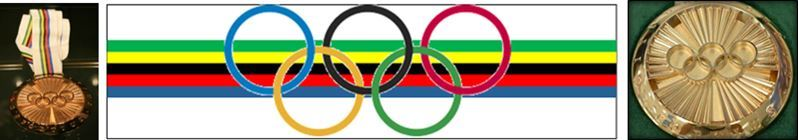
Mais l’objet de notre article porte sur un tout autre sujet. En effet, de toutes les médailles d’or, d’argent ou de bronze, que les athlètes olympiques peuvent rapporter des jeux éponymes, il en existe une, fort peu connue du grand public, qui récompense des mérites tout à fait particuliers et méritants : Il s’agit de la « Médaille Pierre de Coubertin » ! Cette distinction est en effet la récompense ultime des Jeux. Baptisée du nom du fondateur des jeux olympiques modernes, elle est destinée aux sportifs ayant le véritable esprit olympique et incarnant le mieux, les valeurs olympiques de la sportivité, de l’équité et de la décence ...
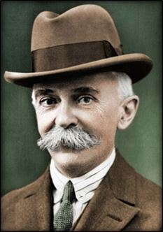
Mais quelques rares sportifs auront l’insigne honneur de repartir en plus avec la médaille Pierre de Coubertin. Ayant une symbolique plus forte qu'une médaille d'or, la médaille Pierre de Coubertin ne fut décernée qu'à une vingtaine de personnes entre 1964 et 2016. Cette distinction est promise aux seuls et rares athlètes qui ont fait preuve d'une attitude remarquable lors de la compétition. Elle récompense les sportifs qui - en plus de leurs performances physiques – ont su incarner « l'esprit Coubertin », transcendant l’esprit sportif (le fameux « Fair Play » anglo-saxon) au-dessus des pures performances athlétiques, comme le souhaitait le français Pierre de Coubertin !
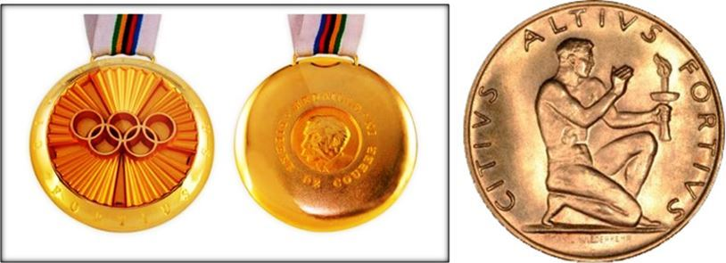
Sur les 22 titulaires de la médaille « Pierre de Coubertin » on ne compte que 3 femmes, 3 personnes la reçurent à titre posthume et 6 ne sont pas des athlètes olympiques. Nous présentons ci-après les 22 titulaires de cette prestigieuse décoration et présentons (pour la première fois) les motifs qui leur firent obtenir cette distinction !
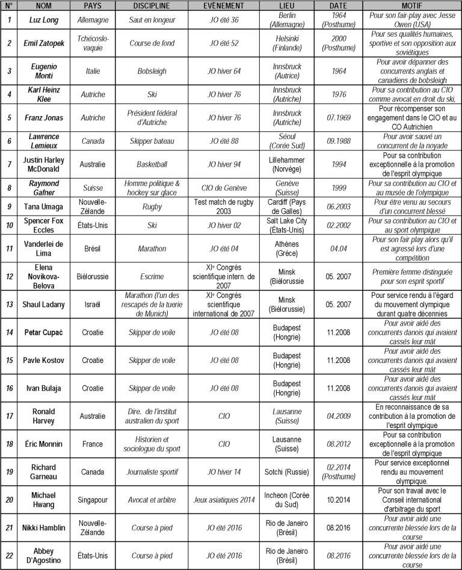
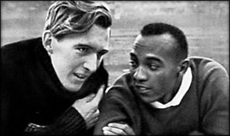
Le premier bénéficiaire de cette médaille, fut – à titre posthume en 1964 - le légendaire athlète allemand, Luz Long qui aurait aidé Jesse Owens lors des Jeux olympiques de Berlin de 1936. En effet, Luz Long (mort au combat en 1943) avait aidé le sportif noir américain (notamment en lui conseillant de rallonger sa course d’élan), permettant à celui-ci d’obtenir la médaille d'or et de le féliciter fraternellement au grand dam d’Adolf Hitler, présent aux jeux ! Mythe ou réalité, cette légende illustre bien, en tout cas, l’esprit dans lequel est attribué la médaille Pierre de Coubertin !
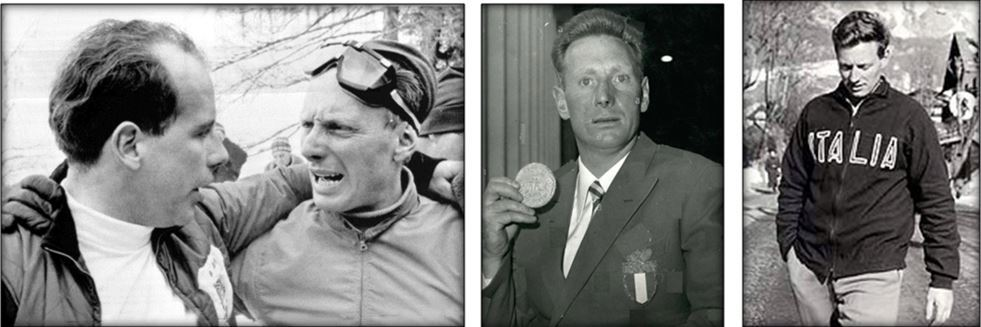
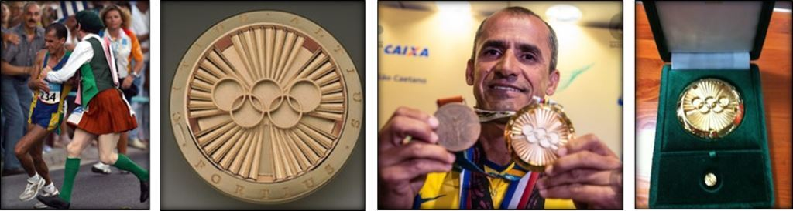
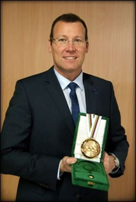
C’est à ces différents titres qu’il reçut exceptionnellement du Comité International Olympique (CIO) la médaille Pierre de Coubertin en 2012, médaille qui lui fut remise en aout 2013 à Lausanne, par le président du CIO, Monsieur Jacques Rogge.
Il est le premier et unique français décoré de cette prestigieuse distinction !
Mais c’est sans doute en 2016 aux Jeux-Olympiques de Rio, que de la Néo-Zélandaise Nikki Hamblin illustra le mieux l’esprit de cette distinction. Celle-ci eut un geste magnifique en demi-finale du 5.000 mètre. En effet, elle s’arrêta en pleine course et aida sa rivale américaine Abbey D'Agostino, à terminer sa course alors que cette dernière s'était blessée durant l'épreuve (elle l’avait fait tomber involontairement). Elles finir ensemble la course, illustrant ainsi superbement l’esprit olympique si cher à Coubertin !
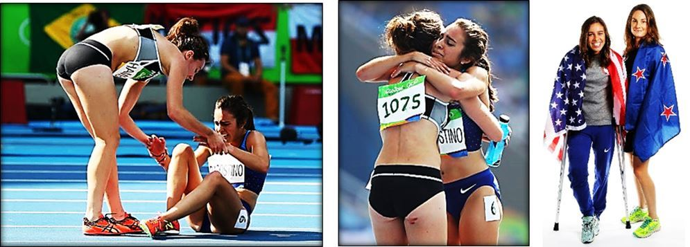
Mais la médaille Pierre de Coubertin, en raison de son attribution exceptionnelle, ne peut récompenser tous les engagements des fervents supporters au profit du sport olympique. Aussi et dans le même ordre d’esprit le Comité International Olympique décida-t-il en Mai 1978 de créer « L'Ordre Olympique » en remplacement du simple « Certificat olympique ». L'ordre Olympique est la plus haute distinction liée à l'olympisme. Il comporte trois niveaux : bronze, argent et or. Tous ont la même forme et sont composés d'un collier métallique représentant les cinq anneaux du drapeau olympique. Le collier se porte autour du cou comme sur la photo ci-dessous par la triple médaillée olympique en biathlon, Myriam Bédard qui reçut cet ordre le 23 juin 2001. L'Ordre olympique est décerné à une personne qui a illustré l'idéal olympique par son action, qui s'est distinguée par son mérite dans le monde sportif ou qui a rendu des services exceptionnels à la cause olympique, soit par ses exploits personnels soit par sa contribution au développement du sport. L’ordre est toutefois moins prestigieux que celui de la médaille Pierre de Coubertin. D’une dimension « plus politique » il récompensa notamment Jesse Owens, Steffi Graf, Alberto Tomba mais aussi Indira Gandhi, Nelson Mandela etc… Il existe enfin et dans le même esprit, une « médaille de l’ordre Olympique » créée à partir de 1980 et qui comporte 3 classes : Or, argent et bronze. Cette médaille est ronde avec des anneaux olympiques évidés au centre et suspendue à un ruban blanc au couleur olympiques.
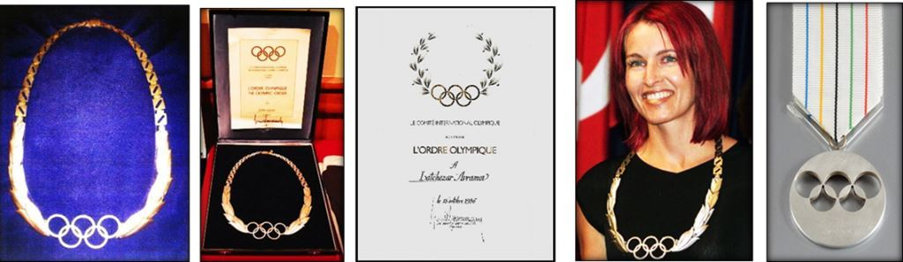
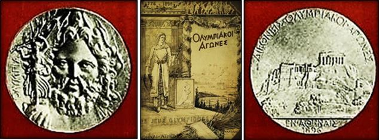 Le rêve du baron Pierre de Coubertin était alors devenu, réalité … !Affiche des Jeux Olympiques d’été d’Athènes en Grèce en 1896 et médaille (d’argent) décernée aux premiers vainqueurs olympiques. L'avers représentait Zeus tenant un globe sur lequel reposait Niké, la victoire ailée. La légende « Olympie » en grec figurait à gauche de la médaille. Le revers représentait pour sa part l'Acropole surmontée de l'inscription en grec « Jeux olympiques internationaux d’Athènes 1896 ».
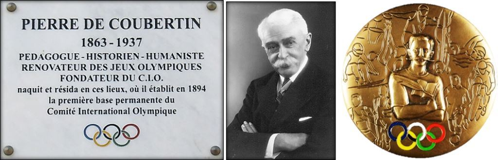
O.M.
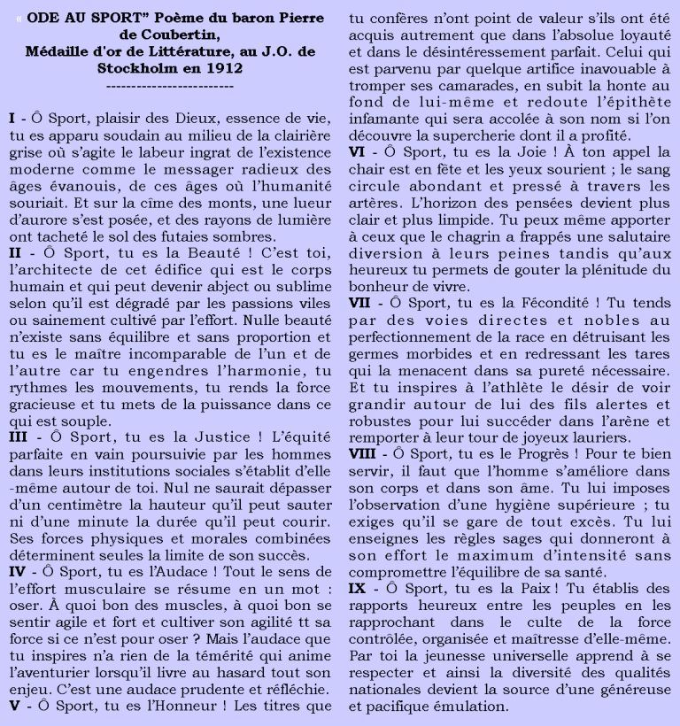
MEDIAGRAPHIE
* Gentside Sport : La médaille Pierre de Coubertin est la plus difficile à remporter aux J.O. (Samuel Vaslin-fitou, 22.08.2016).
* Se coucher moins Bête : Pierre de Coubertin (30.08.2016).
* Wikipédia : Articles sur les titulaires des médailles Pierre de Coubertin.
* Le Temps : Pierre de Courbertin, la médaille publiée (L. Fe - 17 avril 2015).
* Bustel. com : “What is a Pierre de Coubertin medal, this rare Olympic prize celebrates sportsmanship” (Marissa Higgins – 19.08.2016).
* Wikisource : Ode au sport (P. de Coubertin – 1912)
REVUE MÉTHODE
http://revuemethode.org
Partager cette page